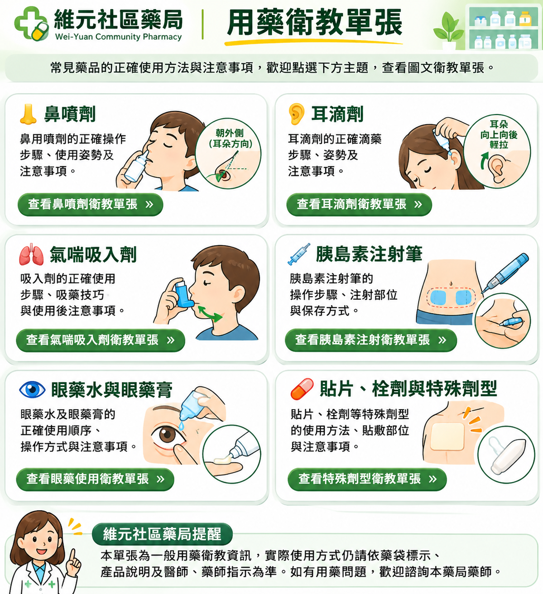
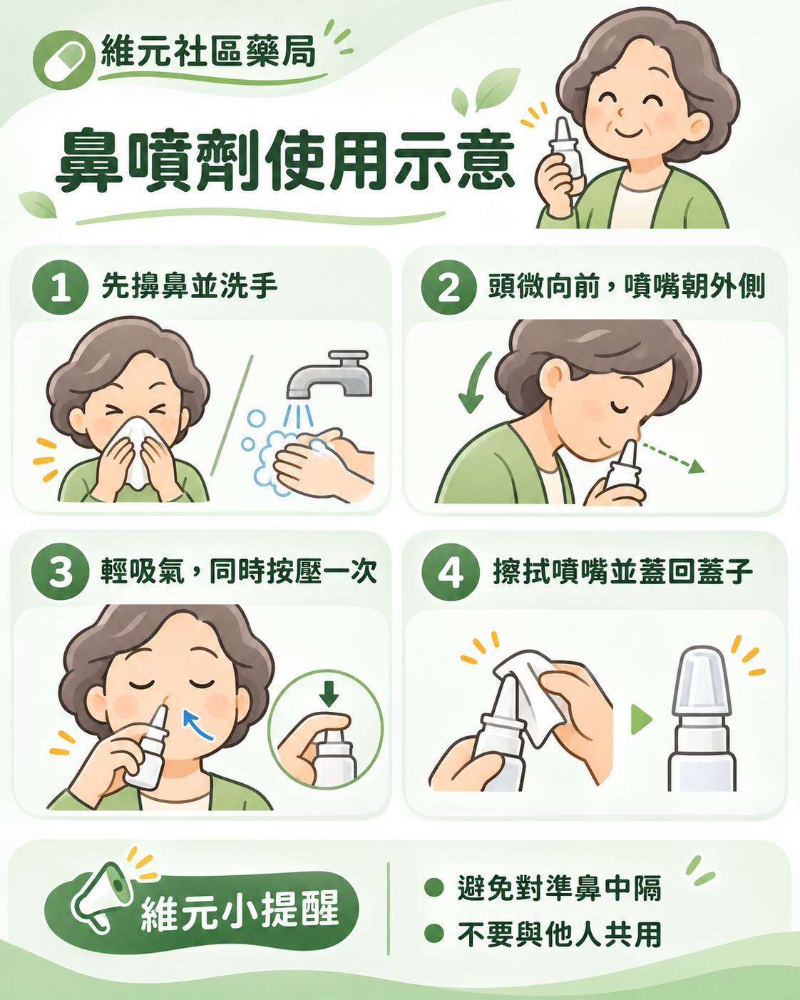
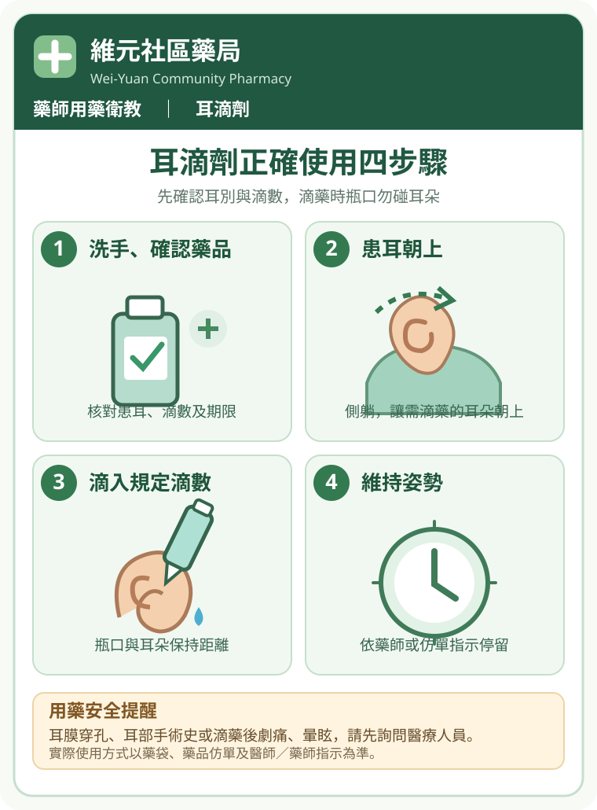

用藥衛教單張
藥師整理的常見用藥操作圖解，方便長輩手機閱讀，也能列印帶回家。

👃 鼻噴劑
噴嘴朝鼻腔外側，確認正確噴藥姿勢。
查看衛教單張👂 耳滴劑
患耳朝上，瓶口避免碰觸耳朵。
查看衛教單張🫁 氣喘吸入劑
辨認吸入器種類，正確吸入藥物。
查看衛教單張💉 胰島素注射筆
核對劑量、輪替注射部位。
查看衛教單張👁️ 眼藥水與眼藥膏
滴嘴不碰眼睛，注意間隔與順序。
查看衛教單張💊 貼片與特殊劑型
確認使用位置及個別藥品說明。
查看衛教單張插圖為通用教學示意，不同藥品及裝置的操作可能不同，請依藥袋標示、產品說明及醫師或藥師指示為準。
👃 鼻噴劑｜衛教單張

使用前先確認
確認藥名、每側鼻孔的噴次、使用頻率，以及是否須搖勻或預先試噴。
操作重點
- 洗手、擤鼻；依產品說明確認是否需要搖勻、首次使用是否須試噴。
- 頭部自然略前傾，將噴嘴放入鼻孔，避免對準鼻中隔。
- 依藥品說明輕吸氣並按壓，使用次數以醫囑為準。
- 擦拭噴嘴並蓋回蓋子，不與他人共用。
不同鼻噴劑的準備與清潔方法不同，請先核對品名。
此單張為一般性衛教，不能取代個別藥品仿單、處方與醫師／藥師指導。如有疑問，請攜帶藥品至維元社區藥局諮詢。
👂 耳滴劑｜衛教單張

使用前先確認
核對左耳或右耳、每次滴數及使用天數。
操作重點
- 洗手，核對藥品、使用哪一側耳朵及滴數。
- 如產品指示可先以手掌握住藥瓶片刻，避免冰冷滴液造成不適。
- 側躺，使需滴藥的耳朵朝上；依年齡與藥師指示調整耳廓位置。
- 滴入規定滴數，瓶口勿接觸耳朵；依指示維持姿勢。
- 蓋緊瓶蓋，依仿單保存。
耳膜穿孔、耳部手術後或出現劇痛、暈眩時，應先詢問醫療人員。
此單張為一般性衛教，不能取代個別藥品仿單、處方與醫師／藥師指導。如有疑問，請攜帶藥品至維元社區藥局諮詢。
🫁 氣喘吸入劑｜衛教單張

使用前先確認
先辨認吸入器類型及藥品用途；定量噴霧、乾粉、軟霧吸入器使用方法各不相同。
操作重點
- 確認是定量噴霧吸入器（MDI）、乾粉吸入器（DPI）或其他裝置。
- 依裝置說明完成準備；不同裝置的吸氣速度與操作步驟不同。
- 正確吸入處方劑量，依裝置指示閉氣。
- 使用含吸入型類固醇的藥物後，依衛教漱口並吐掉漱口水。
控制型與緩解型藥物用途不同；急性喘不過氣時依個人急救計畫處理，嚴重時立即就醫。
此單張為一般性衛教，不能取代個別藥品仿單、處方與醫師／藥師指導。如有疑問，請攜帶藥品至維元社區藥局諮詢。
💉 胰島素注射筆｜衛教單張

使用前先確認
核對胰島素品名、濃度、醫囑單位數、注射時間及筆型；不同產品不可任意替換。
操作重點
- 洗手，核對胰島素品名、外觀、有效期與醫囑劑量。
- 依筆型裝置說明裝上新針頭，完成必要排氣或流量測試。
- 選擇適當注射部位，按醫療人員教學輪替位置。
- 設定醫囑單位數，注射後依裝置說明停留足夠時間，再拔出針頭。
- 卸下針頭投入防穿刺容器；胰島素按個別產品規定保存。
不同筆型注射器操作有差異。低血糖症狀或劑量疑問請與醫療人員確認，勿自行調整。
此單張為一般性衛教，不能取代個別藥品仿單、處方與醫師／藥師指導。如有疑問，請攜帶藥品至維元社區藥局諮詢。
👁️ 眼藥水／眼藥膏｜衛教單張

使用前先確認
確認哪一眼、一次幾滴、使用頻率、開封後可用期限及隱形眼鏡處理方式。
操作重點
- 洗手，確認藥名、使用眼別及使用頻率。
- 頭稍微後仰，輕拉下眼瞼，避免瓶口或管口碰觸眼睛及睫毛。
- 眼藥水滴入醫囑滴數；閉眼並依指示輕壓內眼角。
- 眼藥膏依指示擠入下眼瞼內側，使用後可能短暫視線模糊。
- 使用多種眼藥時，先後順序及間隔依醫囑或藥師說明。
此單張為一般性衛教，不能取代個別藥品仿單、處方與醫師／藥師指導。如有疑問，請攜帶藥品至維元社區藥局諮詢。
💊 其他特殊劑型｜衛教單張

使用前先確認
核對劑型、使用部位、頻率及保存條件，避免將外用藥誤當口服藥。
操作重點
貼片、栓劑、外用製劑等的正確方法依藥品而異，無法以單一操作步驟涵蓋。
- 先確認藥名、使用部位、劑量與頻率。
- 詳閱個別藥袋、仿單及藥師提供的衛教資料。
- 若不確定貼片是否可裁切、栓劑如何放置或需要保存溫度，先詢問藥師。
此單張為一般性衛教，不能取代個別藥品仿單、處方與醫師／藥師指導。如有疑問，請攜帶藥品至維元社區藥局諮詢。